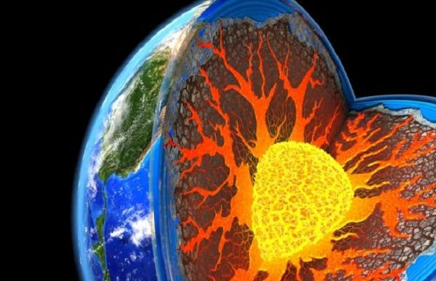
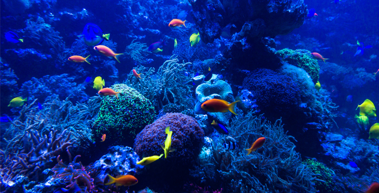

Te explicamos qué es la ciencia y el conocimiento científico, qué es el método científico y sus pasos. Además, cuáles son los tipos de ciencias.

INTRODUCCION
La ciencia es el conjunto de conocimientos que se organizan de forma sistemática obtenidos a partir de la observación, experimentaciones y razonamientos dentro de áreas específicas. Es por medio de esta acumulación de conocimientos que se generan hipótesis, cuestionamientos, esquemas, leyes y principios.
La ciencia se encuentra regida por determinados métodos que comprenden una serie de normas y pasos. Gracias a un riguroso y estricto uso de éstos métodos, son validados los razonamientos que se desprenden de los procesos de investigación, dando rigor científico a las conclusiones obtenidas. Es por esto que las conclusiones derivadas de la observación y experimentación científica son verificables y objetivas.
RAMAS
OTRAS ENTRADAS: |
Te gusta esta pagina? |